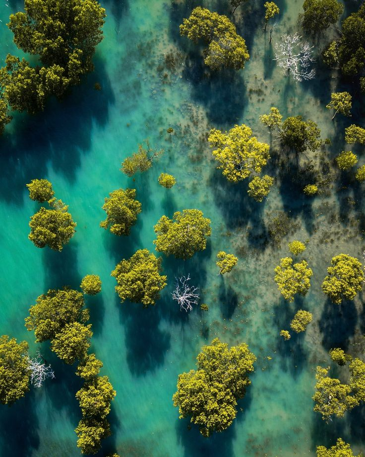

108.000km
Garis pantai Indonesia yang membutuhkan benteng alami abrasi
Indonesia memiliki garis pantai terpanjang kedua di dunia, namun jutaan hektar mangrove dan terumbu karang terancam abrasi, polusi plastik, dan pemanasan global. Mari bergerak bersama untuk laut yang lestari.

Garis pantai Indonesia yang membutuhkan benteng alami abrasi
Hutan mangrove kritis yang butuh rehabilitasi mendesak
Terumbu karang nasional dalam kondisi rentan dan rusak parah
Bibit bakau ditanam bersama jejaring komunitas pesisir